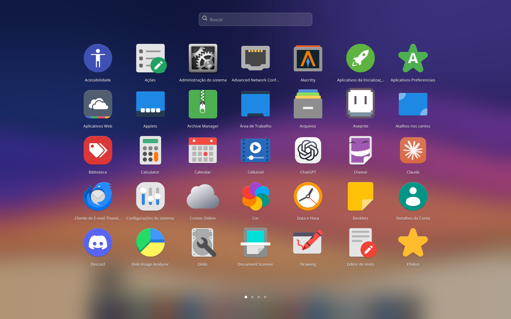
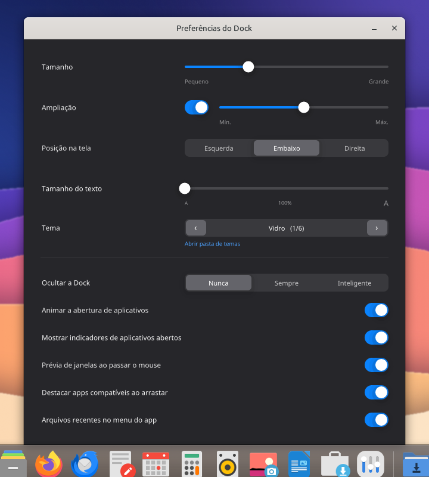
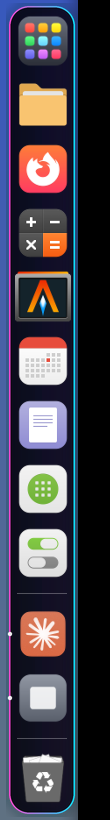

rdock
rdockFish-eye magnification
Icons grow along a cosine curve as the pointer approaches, and their neighbours slide aside.
rdock is a macOS-style dock for X11 Linux desktops such as Cinnamon, XFCE and MATE. It is written in pure Rust, with no GTK or Qt, and draws every pixel itself.
Move the pointer over the dock to magnify it. Click an app to launch it, and click Downloads to open the stack.
Every animation runs on damped springs. When nothing moves, rdock uses 0% CPU.
Icons grow along a cosine curve as the pointer approaches, and their neighbours slide aside.
An icon keeps bouncing until its application's window appears.
A dot sits under every open app, and two dots mean two or more windows. Open apps that aren't pinned appear after a separator, matched by WM_CLASS.
Drop a folder on the dock. Up to 9 items fan out in an orbit. Bigger folders open a panel with subfolders, search, sorting, a preview pane and full keyboard control.
Rest the pointer on an open app to see live thumbnails of its windows, with the workspace of each. Click one to focus it, × closes it, and the mouse wheel cycles through them.
While you drag a file, the apps that can open it rise and the others fade. Drop it on an app to open it, on a stack to move it there, or on the Trash to delete it.
Right-click an app to reopen what it opened last, read from recently-used.xbel.
A full-screen grid of every installed app over a blurred copy of the desktop, with sliding pages and accent-insensitive search as you type.
Drag icons to reorder them, drag one out of the dock to remove it with a "poof", and drag apps from the Launchpad or .desktop files onto the dock to pin them.
Put the dock at the bottom, left or right of the screen. It can never hide, always hide, or hide smartly: only when the active window touches it.
When your desktop turns animations off, popovers fade in instead of springing open.
Partial redraws, shared-memory uploads (MIT-SHM) and cached icons keep an animated frame at about 0.5–2 ms and the Launchpad at 60 fps.
Screenshots of rdock running on Linux Mint Cinnamon.




Draw the shelf the way it looks at the bottom of the screen. rdock scales it to the shelf's height and splits it into three strips.
~/.config/rdock/themes/. Its name becomes the theme name in Preferences → Tema.The theme buttons under the demo above use the real theme files and the same three-strip tiling.
rdock needs an X11 session with a compositor (Cinnamon, XFCE with compositing or picom), Rust 1.82 or newer, and gio to launch apps. Wayland is not supported.
git clone https://github.com/berdfandrade/rdock.git cd rdock cargo build --release ./target/release/rdock
On startup rdock adds an rdock entry to your applications menu that opens its preferences. If another dock such as Plank is running, stop it first with pkill plank.
cargo install --path . mkdir -p ~/.config/autostart cat > ~/.config/autostart/rdock.desktop <<EOF [Desktop Entry] Type=Application Name=rdock Exec=$HOME/.cargo/bin/rdock X-GNOME-Autostart-enabled=true X-GNOME-Autostart-Delay=2 EOF
mkdir -p ~/.local/share/rdock/themes && cp themes/*.png ~/.local/share/rdock/themes/
The interface is in Brazilian Portuguese.
The dock draws everything on the CPU with tiny-skia and talks to the X server through x11rb.
| main.rs | Event loop, shared state, window → app matching |
| dock.rs | Layout, magnification, bounce, drag & drop, hiding |
| launchpad.rs | App grid, search, paging, screen capture and blur |
| stack.rs | Folder listing, inotify watcher, orbit and panel |
| previews.rs | Window thumbnails captured on a background thread |
| icons.rs | XDG icon theme lookup, SVG/PNG rasterisation, icon cache |
| draw.rs | Drawing primitives, glass, fast blits, text |
| x.rs | ARGB windows, shared-memory uploads, EWMH helpers |
| anim.rs | Damped springs |